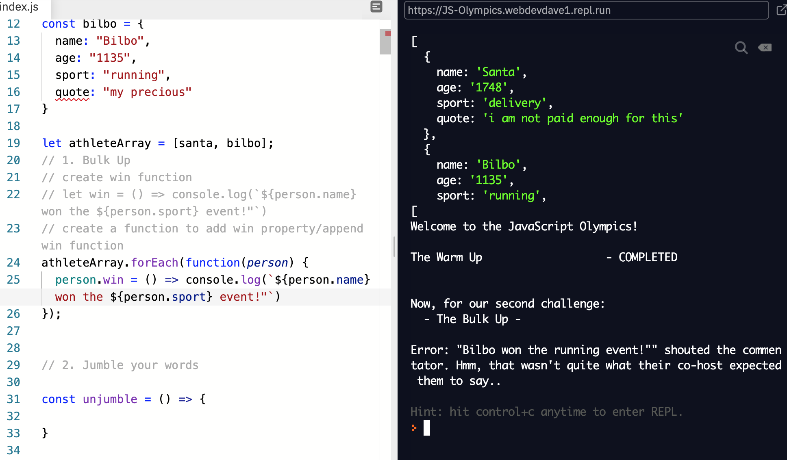
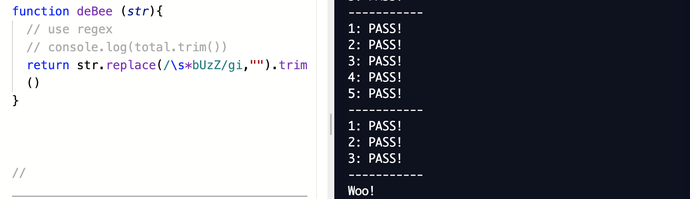

Solving problems...
If you having code problems I feel bad for you son I got 99 problems and I've solved one so I still got 98 left...
Working through Repl.it
Wowee what a week it has been. Week 4 almost done and dusted... Safe to say it has been a challenging one for me and one I've enjoyed thoroughly. I discovered a lot about my learning style and problem-solving towards coding and I am proud for the way I managed my time during this week.
When I first started the kata challenges I found the first two exercises fairly straight forward and easy to navigate my way around. The one's after I found far more challenging and small errors started to occur. One example of this was having to create a block of code that would then show or return a message. In my case, the message was "Bilbo won the running event!"
It took me a while to figure out why I was getting an error. It looked to me as though I was returning the string the way they asked for it. Then I clicked an additional single character " found at the end of my sentence was resulting in the error!
Where I went wrong was in using a feature called template literals I forgot that the `` become "" when the feature is executed. Once I fixed this the code worked perfectly! It showed me that such a simple single character error can disrupt the whole code functionality. Great lesson to learn.
Solving a problem with elegance
I think I achieved this when I came to the last challenge in built-in methods. I was happy to see my solution worked by utilizing JavaScript regular expressions. Regular expressions are patterns that we can use to match character combinations in strings. I learnt a bit about regex (regular expressions) through freecodecamp
The challenge was to remove the word "buzz" from any string that was input into the function. So using regex I came up with the following...
To breakdown my code I first used the in-built function .replace() this finds something and then replaces it with the second parameter. I had to remove the word buzz completely so I replaced it with an empty string. Using regex syntax (/Insert what to look for/) I searched for 0 or more occurrences of the word "buzz" the symbols that preceed "buzz" employ this the \s also removed the white space preceding "buzz". The characters after the word are called flags. The g flag represents global, which means it will search and match all occurrences. Without it, it would just match the first instance of it. The i flag means it is case insensitive. As you can see I typed in "BuZz" and it still matched with "Buzz, buzz, BUZZ" etc.
Learning about how I deal with problems
I've certainly discovered a few methods I encourage myself to keep using to further my learning and how I learn. I am incredibly proud of my goal setting especially earlier in the week when I was stumped with the Kata's I told myself "you have the time, go back and reinforce the basics". I straight away mentioned my plan of attack to my facilitator so that it was set in stone. In doing so I held myself accountable to following through with my plan.
Not only did I go through the freecodecamp basics a third time. I carried on with the lessons delving deeper into JavaScript (there's quite a lot you can do!). Once I came back to the kata's I felt far more comfortable with them. Most of the exercises I answered myself, only with a few did I have to look at the sample answers but even then I could break down the code and understand what it was doing.
Writing in pseudocode really helped what I was trying to achieve, breaking down the code into smaller parts also helped. I would then console log every step of the way. If it would log what I was expecting then great if it didn't then I would explore why. Multiple occasions I would ask the cohort for help and before I received the answer the process of asking in itself solved the solution.
So reflecting on week 4 I learnt a lot about myself in terms of how I learn and how I attack coding problems, I've also learnt the methods I need to keep utilizing and most importantly I've learnt that we need to go at our own pace. It took courage for me to tell myself slow down, take a step back and start again.